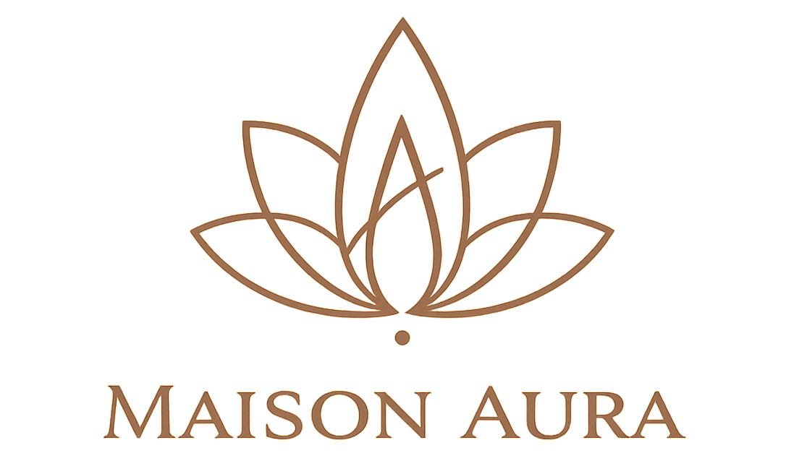
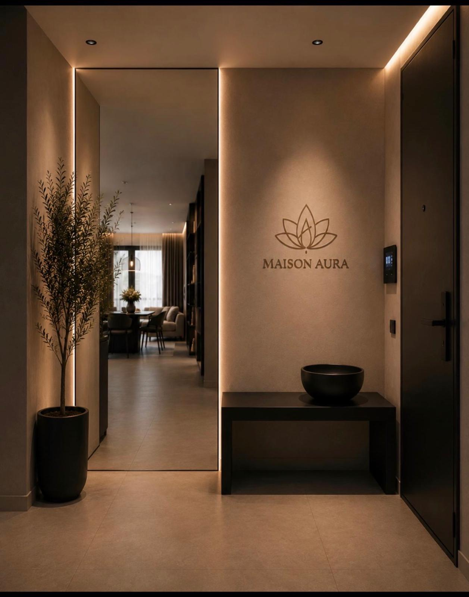
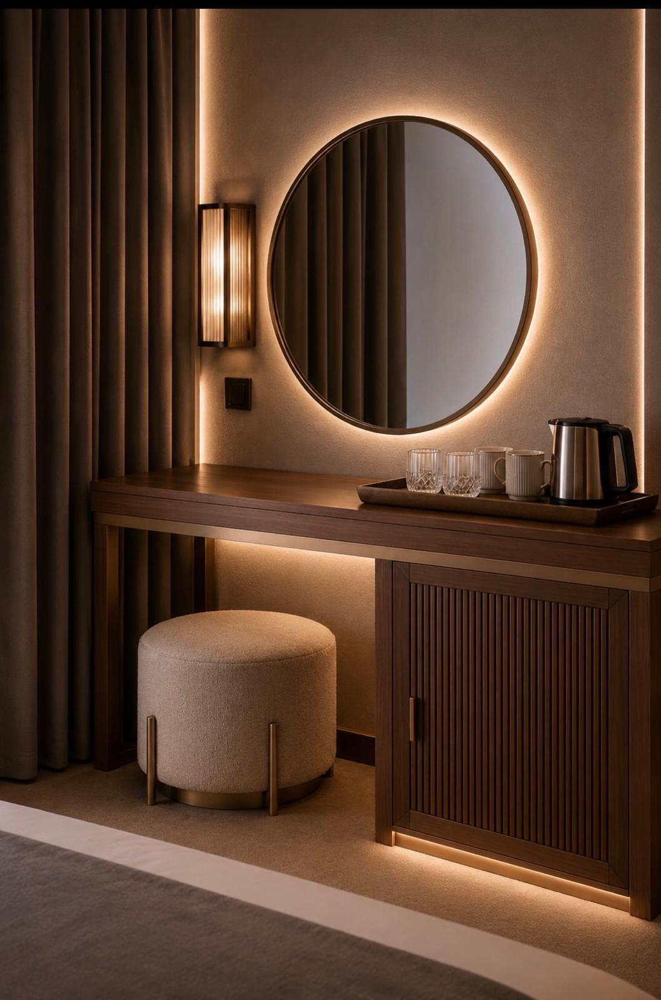

YOUR PRIVATE RETREAT
Room to
breathe.
Natural materials, generous space and a slower rhythm.

DESIGN DIRECTION · ADRIATIC STILLNESS
Warm, understated hospitality. Cormorant Garamond headings and Manrope body text.


YOUR PRIVATE RETREAT
Natural materials, generous space and a slower rhythm.